評価¶
[評価] タブでは、ユーザーが転送に含まれるファイルを評価および分析する機会が提供されます。[評価] タブには、ファイルの特性と内容を調べる機能が含まれており、ユーザーは、ファイルがArchivesSpaceで作成された検索支援に接続でき、転送からどのファイルをSIPに追加するか、およびこれらのファイルをSIP内でどのように配列するかをユーザーが決定できます。
鑑定タブを使用するには、 転送タブのマイクロサービス の最後に到達したときに、バックログに転送する必要があります。
注釈
ArchivematicaをElasticsearchなし で実行している場合、またはElasticsearchの機能が制限されている場合、ダッシュボードに「鑑定」タブが表示されないことがあります。
このページでは：
Backlog¶
バックログに送られた転送は、鑑定タブのバックログペインで確認できます。ページ上部の検索ボックスを使用して空白検索を行うか、検索用語とパラメーターを入力して検索を絞り込むことにより、バックログ内のすべてを見ることができます。
{kind=link}
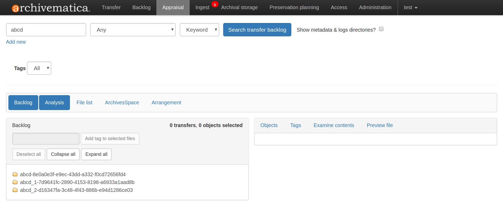
[Backlog]ペインに転送名のリストが表示されます。黄色いフォルダのアイコンをクリックするか、 Expand all を選択すると、各フォルダを展開できます。 Collapse all をクリックすると、開いているフォルダがすべて折りたたまれます。
{kind=link}
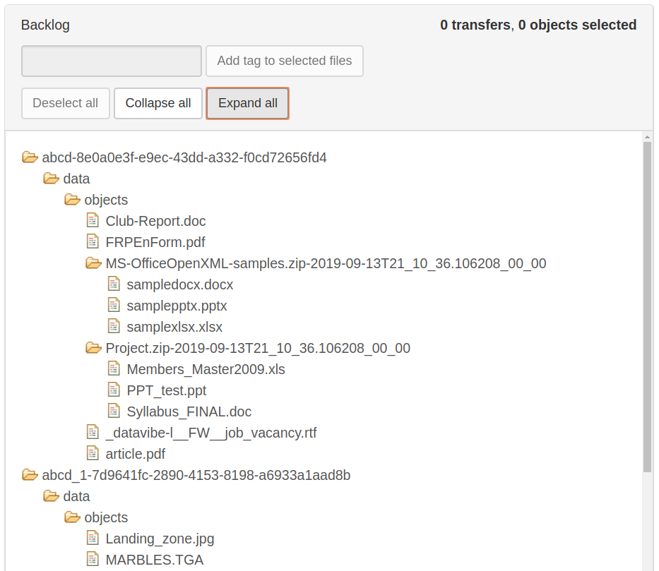
Show metadata & logs directory 検索ボックスの右側にある「Show metadata & logs directory」にチェックを入れると、検索結果にメタデータとログファイルを含めることができます。
{kind=link}
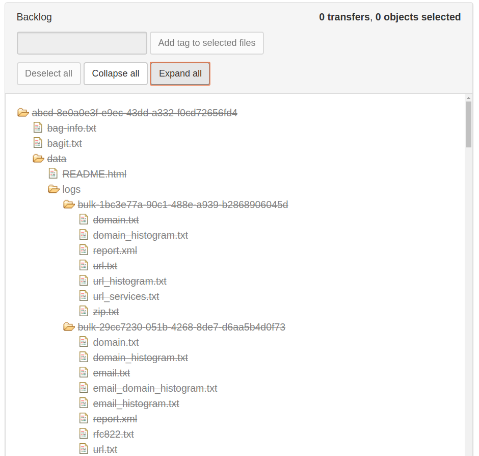
ファイルが灰色で表示されたり、取り消し線が引かれたりする理由は2つあります：
このファイルは、メタデータまたはログファイルであるため、ユーザーが操作することはできません。
このファイルはすでに、SIPに 配列 されているため、バックログには存在しません。
ファイルのタグ付け¶
バックログペインでは、鑑定を助けるためにファイルにタグを追加できます。タグは、どのような形でも記録されず、「鑑定」タブ以降も持続しません。
Backlogペインでファイル名をクリックして、1つ以上のファイルを選択します。ディレクトリ内のすべてのファイルにタグを追加したい場合は、ディレクトリ名を選択します。
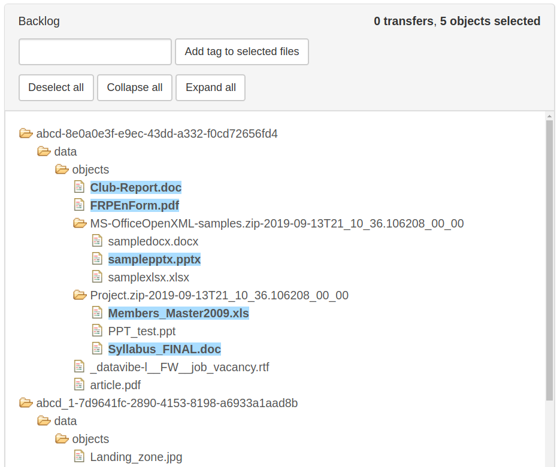
テキストボックスにタグ名を入力し、 Add tag to selected files を選択します。
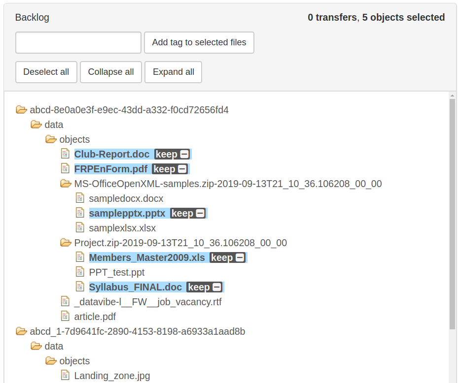
タグを削除するには、タグ名の横にあるマイナス記号をクリックします。
{kind=link}
{kind=link}
タグを作成したら、鑑定ページの上部にある検索ボックスの下にあるタグのドロップダウンから タグ を選択することで、タグ付けされたファイルのみを表示するように検索結果をフィルタリングすることができます。
{kind=link}
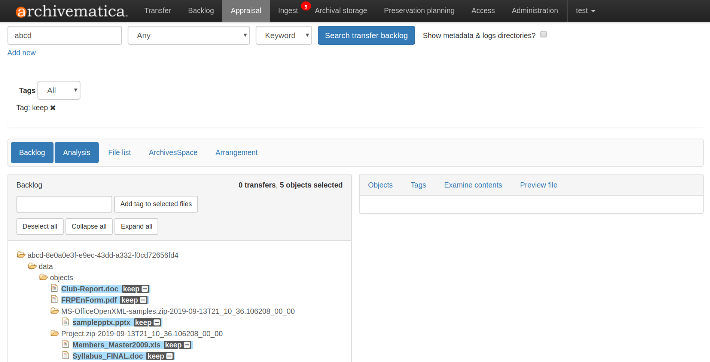
タグは、 ファイルリストペイン でも追加できます。
分析¶
[分析]ペインでは、個々のファイルだけでなく、一括して転送素材を分析できます。Backlogペインで選択されたファイルは、Analysisペインに表示され、4つのタブを使用して分析できます：[オブジェクト]、[タグ]、[内容検査]、[ファイルのプレビュー]の4つのタブを使用して分析できます。
オブジェクト¶
[分析]ペインの[オブジェクト]タブには、選択したファイルのフォーマットとサイズの情報が表示されます。
レポートビューには、選択されたファイルのフォーマット、PRONOM一意識別子（PUID）、フォーマットグループ、ファイル数、選択ファイルのサイズに関する情報のリストが表示されます。
{kind=link}
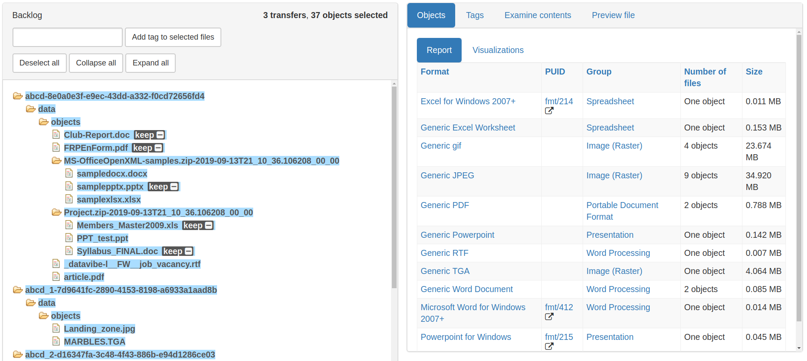
Backlogペインで選択されているファイルに関する情報を表示するレポート。¶
[視覚化] ビューには、各フォーマットのファイルの合計数、または各フォーマットのファイルの合計サイズの 2 つの視覚化オプションが用意されています。
{kind=link}
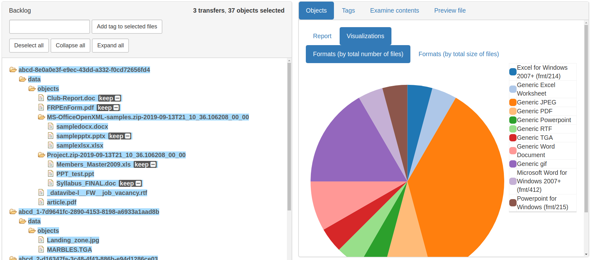
選択されたファイルの各フォーマットの総数を示す視覚化¶
[分析]に表示されたファイルは、[レポート]ビューでこれらのファセットの値を選択することで、[フォーマット]、[PUID]、および[グループ]によってフィルタリングもできます。たとえば、ユーザーがファイルの1つにリストされているグループ「Portable Document Format」をクリックすると、このフィルターが追加され、PDFファイルのみが分析ペインにリスト表示されます。フィルタは、［タグ］ドロップダウンメニューの下に表示され、名前の横にある「x」をクリックすれば削除できます。
{kind=link}
内容検査¶
転送プロセス中、ユーザーは、 コンテンツの検査 を行うかどうかを選択できます。これは、 Bulk Extractor というツールを実行するマイクロサービスであり、ファイルの内容をスキャンして有用な情報を探すフォレンジックツールです。Bulk Extractorは、社会保障番号、クレジットカード番号、郵便住所、電子メールアドレスなど、さまざまなパターンを探します。
[分析]ペインの[内容検査]タブで、ユーザーは、ファイルのいずれかがPII（個人識別情報、より具体的には米国の社会保障番号）またはクレジットカード番号を含むかどうかを確認するために転送を確認できます。
{kind=link}
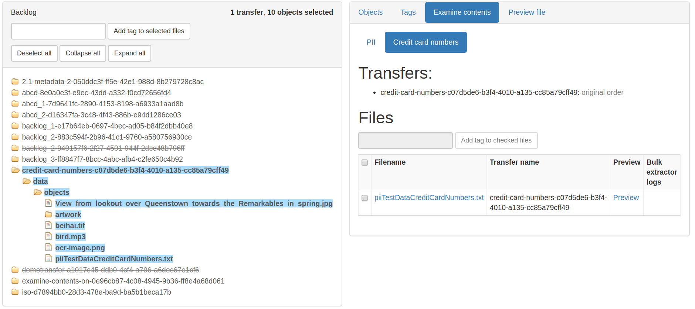
この転送には、クレジットカード番号を含む可能性のあるファイルが含まれています。¶
ファイル名を選択すると、データのプレビューが表示されます。
{kind=link}
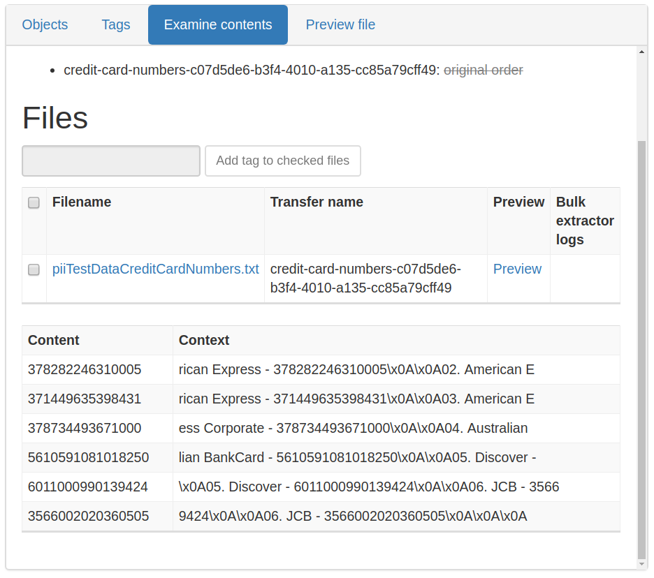
このファイルには明らかにクレジットカードのデータが含まれており、"Content"列にクレジットカード番号が、"Context"列に番号のコンテキストが示されています。¶
プレビュー をクリックすると、可能であればファイルがファイルのプレビュタブに表示されます（ ファイルのプレビュー 、以下を参照）。
また、機密情報を含むファイルにタグを追加するには、ファイル名の横にあるチェックボックスを選択し、テキストボックスにタグを追加して、 Add tag to checked files をクリックします。タグは、[Backlog]ペインのファイルに添付されて表示されます。
注釈
その他の Bulk Extractorデータは、[バックログ]タブから転送をダウンロードして確認できます。
ファイルのプレビュー¶
[プレビュー]ファイルペインを使用すると、ユーザーは、ファイルをコンピュータにダウンロードすることなく見ることができます。プレビューウィンドウは、ブラウザでレンダリング可能なファイル、例えば JPEG画像やMP3オーディオファイルに対してのみ機能します。
ファイルをプレビューするには、ファイルリストペインからファイルを選択する必要があります。
[バックログ]ペインで、表示したいファイルまたはファイルのディレクトリを選択します。
[分析]ペインを開き、[ファイルのプレビュー]タブをクリックします。
[ファイル]一覧ペインで、プレビューしたいファイルを選択します。画像ファイルは、ウィンドウに表示され、オーディオおよびビデオファイルは、メディアプレーヤーに表示されます。
{kind=link}
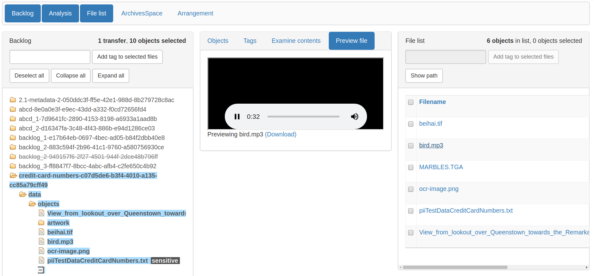
bird.mp3 ファイルをファイルのプレビュータブで再生中。¶
ファイルリスト¶
[ファイルリスト]ペインは、[バックログ]ペインでファイルを選択すると表示されます。ファイルリストには、ファイル名、サイズ、ファイルの最終更新日（可能な場合）、選択したファイルに追加されたタグに関する情報が表示されます。
{kind=link}
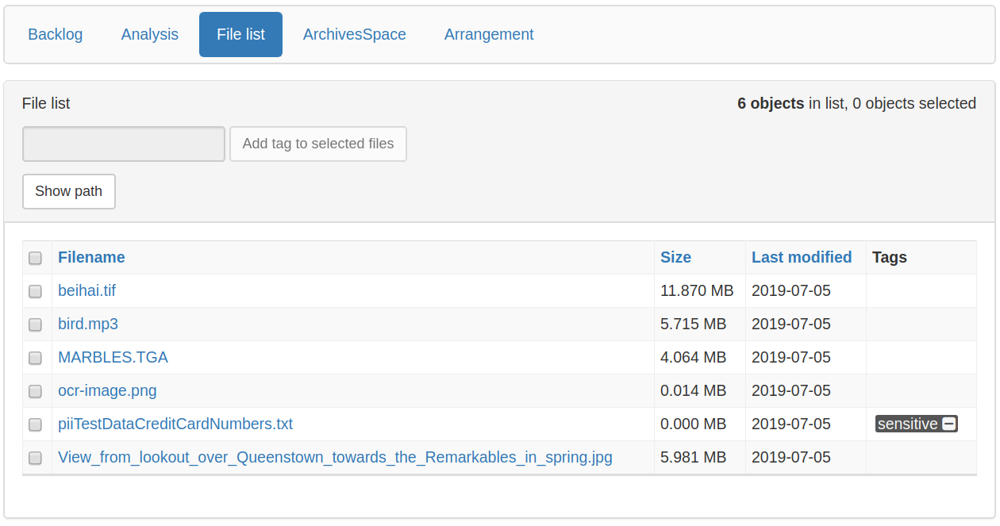
[分析]ペインまたは[タグ]ドロップダウンメニューで適用されたフィルタは、[ファイル]リストに表示されるファイルに影響します。
ファイル名、サイズ、または最終更新日の列ヘッダーをクリックすると、ファイルリストを並べえることができます。
ファイルリストペインのファイルにタグを追加するには、ファイル名の横のチェックボックスを選択し、テキストボックスにタグを追加して、 Add tag to selected files をクリックします。タグは、[Backlog]ペインのファイルと、[File]リストペインの[Tags]列に表示されます。タグを削除するには、タグ名の横のマイナス記号をクリックします。
ファイル名をクリックすると、分析ペインの ファイルのプレビュー タブで、可能であればファイルを表示できます。
また、 Show path をクリックして、ファイルのフルパスのオン/オフを切り替えることもできます。
ArchivesSpace¶
AppraisalタブのArchivesSpaceペインでは、ArchivesSpaceリソースの表示、新しい子レコードやデジタルオブジェクトの追加、リソースメタデータの編集ができます。Archivematicaに転送された素材は、ArchivesSpaceで作成されたリソースに関連付けることができます。ArchivesSpaceペインで素材を整理すると、ArchivesSpaceリソースに関連付けられた素材を含むSIPが作成されます。
ArchivesSpaceとの連携を有効にするには、ArchivesSpaceインスタンスをArchivematicaに接続し、Administrationタブの ArchivesSpace DIP upload セクションに認証情報を追加します。
ArchivesSpaceの用語¶
Resources ：トップレベルの説明メタデータレコードまたはファインディングエイド（所蔵素材、コレクション、レコードグループなど）
Archival objects ：リソース（シリーズ、ファイル、アイテムなど）の下にネストされた下位レベルの記述
Digital objects ：デジタルオブジェクトに関するメタデータ。どのレベルの記述であっても、リソースやアーカイブオブジェクトに関連付けることができます。
ArchivesSpaceの詳細については、https://archivesspace.org/.を参照してください
ArchivesSpaceリソースの検索¶
ArchivesSpaceペインを開いても、入力はされていません。 Title と Identifier フィールドを空白のまま、 Search ArchivesSpace ボタンをクリックすると、すべてのリソースが入力されます。
ArchivesSpaceペインの上部にある検索ボックスを使用すると、リソースのタイトルまたは識別子で検索結果を制限できます。
キャレット（三角形）をクリックしてリソースの階層を展開し、ナビゲートします。
{kind=link}
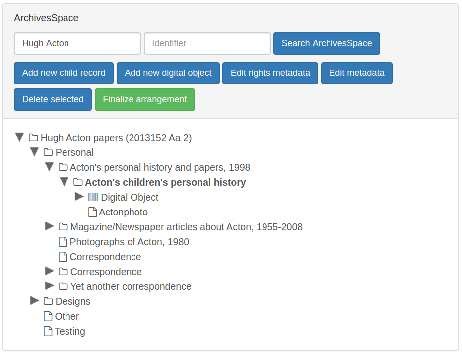
フォルダのアイコンは、ArchivesSpaceリソースまたはアーカイブオブジェクトの階層で、その下に子レコードがネストされていることを示します。
ページアイコンは、ArchivesSpaceリソースとアーカイブオブジェクトの階層で、その下に子レコードがネストされていないことを示します。
デジタルオブジェクトは、平行線のアイコンで示されます。
注釈
ArchivesSpaceで作成されたデジタルオブジェクトは、ArchivematicaのArchivesSpaceペインには表示されません。Archivematica内からリソースに追加されたデジタルオブジェクトのみが表示されます。
アーカイブオブジェクトの作成と編集¶
ArchivematicaのArchivesSpaceペインから、既存のリソースやアーカイブオブジェクトに新しい子アーカイブオブジェクトを追加できます。
子アーカイブ オブジェクトを追加したいリソースまたはアーカイブオブジェクトに移動し、リソースまたはアーカイブオブジェクトの名前をクリックします。
新しい子レコードの追加 をクリックします。メタデータボックスがポップアップ表示され、レコードの基本的なメタデータを入力できます。最低限、新しいアーカイブオブジェクトには、タイトルと説明のレベルが必要です。
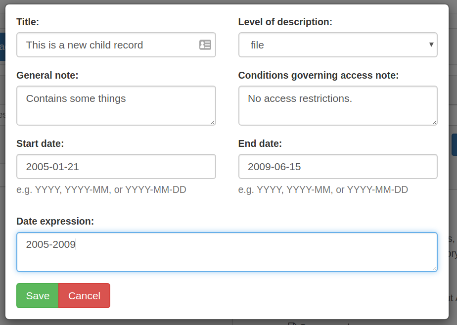
メタデータに問題がなければ、 Save をクリックします。新しい子アーカイブオブジェクトが階層に表示され、ArchivesSpaceリポジトリにも追加されます。
リソースまたはアーカイブオブジェクトを削除するには、リソースまたはアーカイブオブジェクトの名前を選択し、 Delete selected をクリックします。この操作は取り消すことができず、ArchivesSpaceリポジトリでも削除されることに注意してください。
リソースまたはアーカイブオブジェクトのタイトルまたは説明のレベルを編集するには、リソースまたはアーカイブオブジェクトの名前を選択し、 Edit metadata をクリックします。
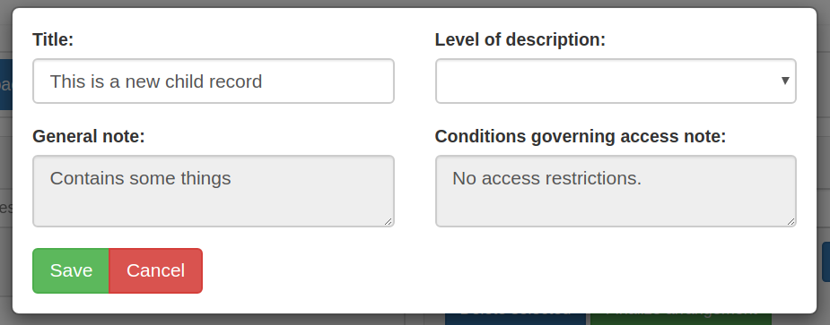
{kind=link}
{kind=link}
権利メタデータの追加¶
ArchivematicaのArchivesSpaceペインを使用して、リソースやアーカイブオブジェクトにライツメタデータを追加できます。Archivematicaは、ライツメタデータに PREMIS rights を使用します。
重要
権利は、SIPレベル、つまり、最終的にSIPとなるリソースまたはアーカイブオブジェクトにのみ追加できます。
リソースまたはアーカイブオブジェクトに権利メタデータを追加するには、リソースまたはアーカイブオブジェクトの名前を選択し、 Edit rights metadata をクリックします。新しいタブが開き、メタデータ情報ページが表示されます。Rightsの見出しの下にある Add を選択します。これにより、権利メタデータ入力フォームの最初のページが開きます。
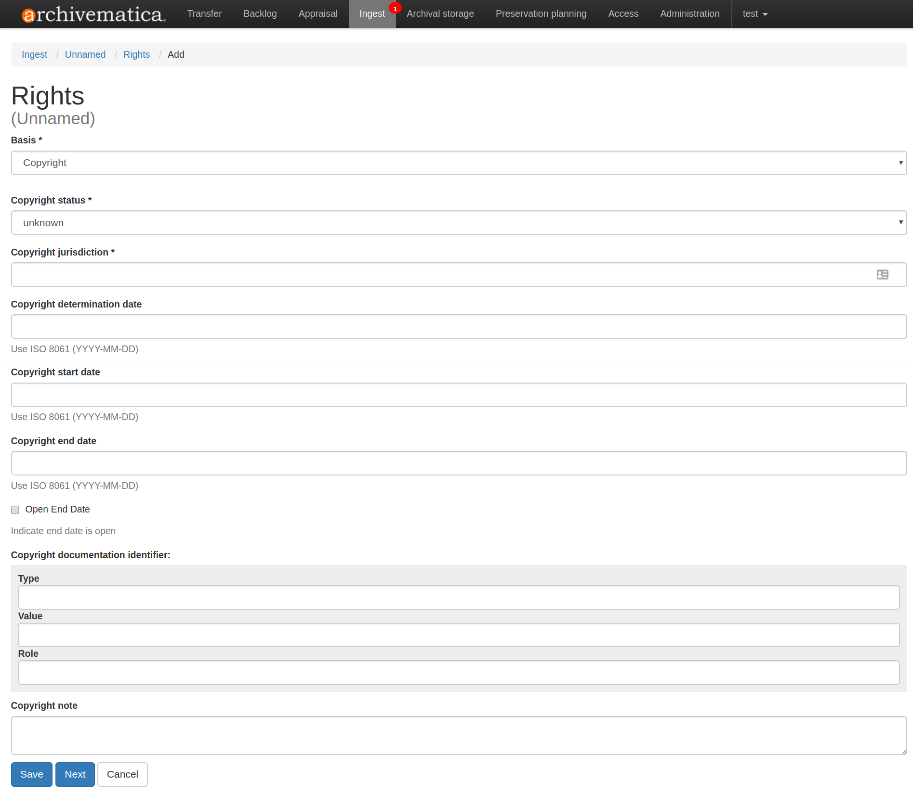
リソースまたはアーカイブオブジェクトの権利ベース情報を追加し、 Save をクリックします。
Next をクリックし、権利行為を追加します。行為情報の追加が完了したら、 完了 をクリックします。
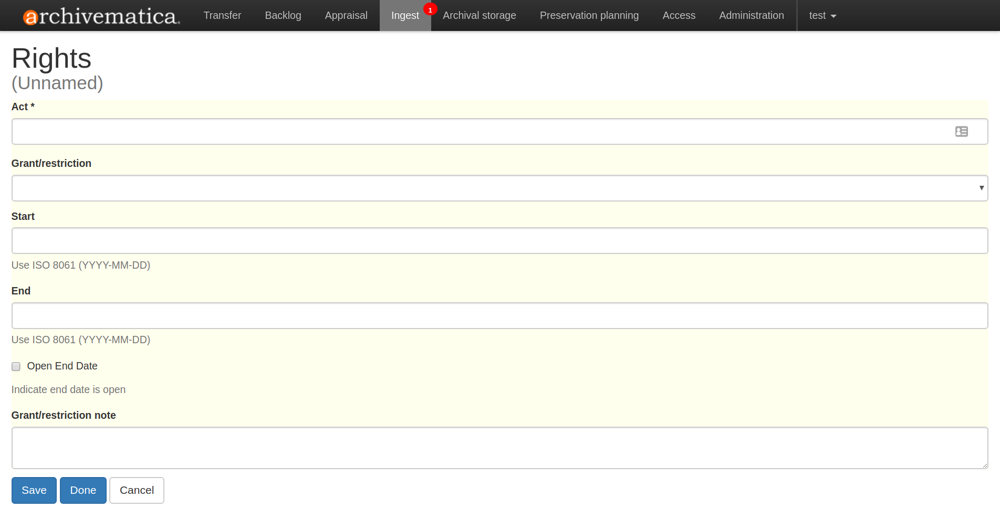
権利メタデータを保存したら、メタデータ情報ページから Add を選択します。
{kind=link}
{kind=link}
デジタルオブジェクトをArchivesSpaceのリソースに接続¶
バックログに保存されている素材は、デジタルオブジェクトコンポーネントを作成し、バックログペインからArchivesSpaceペインの新しいデジタルオブジェクトコンポーネントにファイルをドラッグ＆ドロップすることで、ArchivesSpaceリソースに関連付けることができます。
注釈
デジタルオブジェクトのコンポーネントは、デジタルオブジェクトのAIPが保存されるまでArchivesSpaceリポジトリに表示されません。
ページ上部の検索ボックスを使って空白検索を行うか、検索語句とパラメーターを入力して検索条件を絞り込んで、Backlogペインに入力します。
ArchivesSpaceペインの検索ボックスを使用して、空白検索を行うか、 リソースのタイトルまたは識別子で検索して、ArchivesSpaceペインを入力します 。ArchivesSpaceリソースの階層ビューがペインに表示されます。
デジタルオブジェクトコンポーネントを作成したいリソースまたはアーカイブオブジェクトの名前を選択し、 Add new digital object をクリックします。リソースまたはアーカイブオブジェクトの子として、デジタルオブジェクトレコードが表示されます。
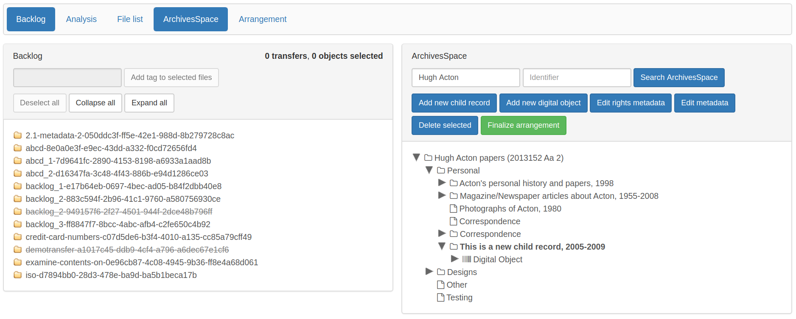
"というタイトルのアーカイブオブジェクトの下に、新しいデジタルオブジェクトが追加されましたた。これは新しい子レコード"です。¶
[バックログ]ペインから、デジタルオブジェクトを選択し、ArchivesSpaceペインの新しいデジタルオブジェクトのレコードにドラッグします。転送で一度に移動できるファイルまたはディレクトリは1つだけです。ファイルはArchivesSpaceリソース1に1回だけ追加できます。この手順を必要なだけ繰り返します。
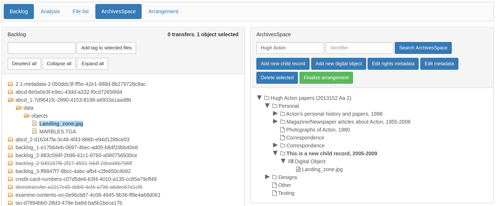
Landing_zone.jpg ファイルがArchivesSpaceペインのデジタルオブジェクトレコードに添付されました。¶
すべてのファイルが追加され、配列に満足したら、素材が配列されたリソースまたはアーカイブオブジェクトの名前を選択し、 Finalize arrangement をクリックします。これで、ArchivematicaのインジェストタブでSIPが開始されます。
{kind=link}
{kind=link}
Tip
ArchivesSpaceペインでSIPを開始する前に、ArchivesSpaceリソースに関連付けられたすべての必要なメタデータが配列されていること、特に配列の親レベルで配列されていることを確認します。ArchivesSpaceで、説明レコードがエージェントレコードにリンクされていることを確認します。
配列¶
配列ペインでは、SIPにする前に、バックログに保存されている素材を整理できます。配列ペインでは、複数の転送素材を1つのSIPにまとめたり、選択したファイルをドラッグ＆ドロップするだけで、結果的に保存したいファイルだけをSIPに含めるように転送をウィードしたりすることができます。
ドラッグ＆ドロップで素材を配列¶
ページ上部の検索ボックスを使って空白検索を行うか、検索語句とパラメーターを入力して検索条件を絞り込んで、Backlogペインに入力します。
注釈
取り消し線が付いているファイルは、そのファイルがSIPに自動的に追加されるメタデータまたはログファイルであるか、またはファイルがすでに別のSIPに含まれているため、配列タブにドラッグできません。
配列ペインで、 Add directory をクリックして、SIPの構造を作成します。別々のSIPディレクトリを作成したり、ネストしたサブディレクトリを作成したりするには、同じボタンを使用します。サブディレクトリを作成するには、 Add directory をクリックする前に、親ディレクトリの名前を選択します。
配列したい転送ディレクトリや個々のオブジェクトを、[バックログ] ペインから [配列] ペインにドラッグ&ドロップします。すべてのメタデータ、提出ドキュメント、およびその他の関連データもオブジェクトとともに配列ペインにコピーされることに注意してください。
すべての関連ファイルを[バックログ]ペインから[配列]ペインのディレクトリにドラッグしたら、目的のSIPに対応する最上位ディレクトリを選択し、 SIPの作成 ]をクリックします。これにより、[インジェスト]タブでSIPが開始されます。
配列が完了し、SIPが長期保管用のAIPに変換されると、[バックログ]タブの 転送を削除 する手順に従って、転送に残っている破棄したいファイルを削除できます。
AtoMの記述レベルを追加¶
DIP to Upload to AtoM を作成する場合、ディレクトリやオブジェクトに記述レベルを追加できます。Archivematicaは、METSファイルに論理的なstructMAPを追加し、AtoMは、選択した記述レベルを適用して情報オブジェクトを作成します。デジタルオブジェクトに記述レベルを適用しない場合、AtoMは、自動的に"item"のレベルを割り当てます。
この機能は、AtoM 2.2以降でサポートされています。
注釈
AtoMの説明レベルを表示させるには、管理タブで AtoM統合 を設定する必要があります。
Arrangeペインでディレクトリまたはオブジェクトを選択します。 Edit metadata ボタンをクリックして、説明のレベルを選択します。
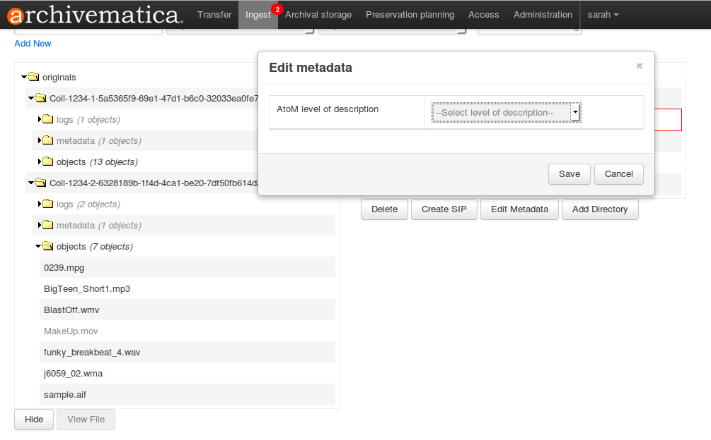
記述のレベルを追加すると、それらはSIPを確定する前に確認できるように配列ペインに表示されます。
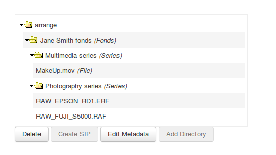
説明のレベルを追加したら、 Create SIP をクリックします。これにより、インジェストタブでSIPが開始されます。
{kind=link}
{kind=link}
重要
SIP配列でディレクトリに記述レベルを割り当てないことを選択した場合、AtoMは、すべてのデジタルオブジェクトがターゲット記述の子レベルの記述になるようにDIP をフラットにします。
SIPに説明のレベルを追加した場合、Archivematicaのフォームから追加したメタデータはDIPに含まれません。
{kind=link}